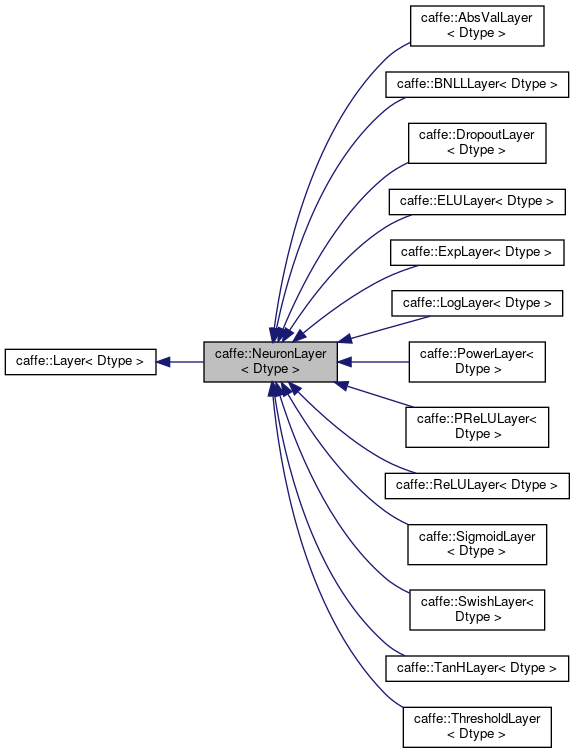
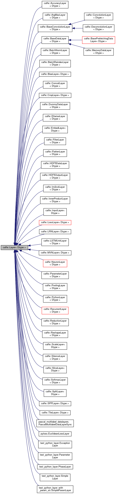

sigmoid函数求导
参考文献：https://blog.csdn.net/chaipp0607/article/details/101946040
template <typename Dtype>
class SigmoidCrossEntropyLossLayer : public LossLayer<Dtype> {
/// sigmoid_output stores the output of the SigmoidLayer.
shared_ptr<Blob<Dtype> > sigmoid_output_;
Dtype normalizer_;
int outer_num_, inner_num_;
/// How to normalize the loss.
LossParameter_NormalizationMode normalization_;
/// Whether to ignore instances with a certain label.
bool has_ignore_label_;
/// The label indicating that an instance should be ignored.
int ignore_label_;
/// The internal SigmoidLayer used to map predictions to probabilities.
shared_ptr<SigmoidLayer<Dtype> > sigmoid_layer_;
/// bottom vector holder to call the underlying SigmoidLayer::Forward
vector<Blob<Dtype>*> sigmoid_bottom_vec_;
/// top vector holder to call the underlying SigmoidLayer::Forward
vector<Blob<Dtype>*> sigmoid_top_vec_;
};
template <typename Dtype>
class InnerProductLayer : public Layer<Dtype> {
private:
// in NxCxHxW
int M_; // M_=N of input,=batch size
int K_; // K_ = CxHxW of input
int N_; // N_: num of class in output
Blob<Dtype> bias_multiplier_;//形状为 batchsize
bool transpose_; // if true, assume transposed weights
};
bias_multiplier_.Reshape(bias_shape);
template <typename Dtype>
class Layer {
protected:
/** The vector that indicates whether each top blob has a non-zero weight in
* the objective function. */
vector<Dtype> loss_;
LayerParameter layer_param_;
Phase phase_;
/** Vector indicating whether to compute the diff of each param blob. */
vector<bool> param_propagate_down_;
vector<shared_ptr<Blob<Dtype> > > blobs_; //权重
};
从solver中得到Net ptr
class Solver
{
ActionCallback action_request_function_;
SolverParameter param_;
int iter_;
int current_step_;
shared_ptr<Net<Dtype> > net_;
vector<shared_ptr<Net<Dtype> > > test_nets_;
vector<Callback*> callbacks_;
Dtype smoothed_loss_;
Dtype smoothed_loss_;
vector<Dtype> losses_;
shared_ptr< Net< Dtype > > net (){return net_; }
vector<shared_ptr<Net<Dtype> > > test_nets_;
inline const vector<shared_ptr<Net<Dtype> > >& test_nets() {
return test_nets_;
}
vector<Blob<Dtype>*> learnable_params_;
};
template <typename Dtype>
class SGDSolver : public Solver<Dtype> {
// history maintains the historical momentum data.
// update maintains update related data and is not needed in snapshots.
// temp maintains other information that might be needed in computation
// of gradients/updates and is not needed in snapshots
vector<shared_ptr<Blob<Dtype> > > history_, update_, temp_;
};
从Net中得到Layer ptr
template <typename Dtype>
class Net {
/// The parameters in the network.
vector<shared_ptr<Blob<Dtype> > > params_;
vector<Blob<Dtype>*> learnable_params_;
vector<vector<bool> > bottom_need_backward_;
vector<bool> layer_need_backward_; //指示器，与layers_等长，表明需要不需要backward,数据层不需要，后面一般需要
const shared_ptr< Layer< Dtype > > layer_by_name (const string &layer_name) const
void Net<Dtype>::CopyTrainedLayersFrom(const NetParameter& param){}
const vector<Blob<Dtype>*>& Forward(Dtype* loss = NULL);
const shared_ptr<Blob<Dtype> > blob_by_name(const string& blob_name) const;
/// bottom_vecs stores the vectors containing the input for each layer.
/// They don't actually host the blobs (blobs_ does), so we simply store
/// pointers.
vector<vector<Blob<Dtype>*> > bottom_vecs_;
/// top_vecs stores the vectors containing the output for each layer
vector<vector<Blob<Dtype>*> > top_vecs_;
vector<Callback*> before_forward_;
vector<Callback*> after_forward_;
vector<Callback*> before_backward_;
vector<Callback*> after_backward_;
Dtype ForwardFromTo(int start, int end);
vector<shared_ptr<Layer<Dtype> > > layers_;
map<string, int> layer_names_index_;
vector<Blob<Dtype>*> net_output_blobs_;
};
InnerProductLayer<Dtype>::Forward_cpu
caffe中全连接层计算的是数学上:
input * weight = output
Batch x Nin * Nin x Nout = Batch x Nout
其中weight在数学上是Nin x Nout的形式，在内存中是按Nout x Nin的格式存储的
证据：
gdb中blobs_[0]->shape() = {Nout, Nin}// vector
这也是调用cblas_sgemm的时候，矩阵B的参数有 TransB=CblasTrans的原因
(全1向量) bias input weight(数学上Nin x Nout, 内存中Nout x Nin)
Batchx1 * 1xNout + Batch x Nin * Nin x Nout
=Batch x Nout + Batch x Nout
=Batch x Nout
main----|ReadSolverParamsFromTextFileOrDie
|solver::net()
|Net::layer_by_name("inputdata")
|MemoryDataLayer<Dtype>::Reset
|Solver::Solve();
|Solver<Dtype>::Step
|caffe::Solver<float>::TestAll
|caffe::Solver<float>::Test
|net_->ForwardBackward()
| |Net::Forward()
| | |ForwardFromTo(0, layers_.size() - 1);
| | | |Layer::Forward(bottom_vecs_[i], top_vecs_[i]);
| | | | |caffe::BaseDataLayer<float>::Reshape
| | | | |caffe::MemoryDataLayer<float>::Forward_cpu
| | | | | |caffe::Blob<float>::Reshape// 改变Blob的shape_data_(shared_ptr<SyncedMemory>) 和 shape_(vector)这两个成员
| | | | | |top[0]->Reshape(batch_size_, channels_, height_, width_);
| | | | | |top[1]->Reshape(batch_size_, 1, 1, 1);
| | | | | |top[0]->set_cpu_data(data_ + pos_ * size_);
| | | | | |SyncedMemory::set_cpu_data
| | | | | |check_device(); // CPU_ONLY的话不会调用
| | | | | |top[1]->set_cpu_data(labels_ + pos_);
| | | | |InnerProductLayer<Dtype>::Reshape(const vector<Blob<Dtype>*>& bottom,
| | | | |Blob::CanonicalAxisIndex
| | | | |caffe::NeuronLayer<float>::Reshape
| | | | |caffe::SigmoidCrossEntropyLossLayer<float>::Reshape
| | | | |LossLayer<Dtype>::Reshape(bottom,top);//vectorloss_shape(0); //Loss layers output a scalar;0 axes.
| |caffe::Net<float>::Backward
| |caffe::caffe::Net<float>::BackwardFromTo
|UpdateSmoothedLoss(loss, start_iter, average_loss)
|caffe::SGDSolver<float>::ApplyUpdate
|Normalize(param_id);
|Regularize(param_id);
|ComputeUpdateValue(param_id, rate);
|caffe::Net<float>::Update
|caffe::Blob<Dtype>::Update()
namespace caffe {
class SolverRegistry {
typedef Solver<Dtype>* (*Creator)(const SolverParameter&);
typedef std::map<string, Creator> CreatorRegistry;
}
}
//
src/caffe/solver.cpp
caffe中网络输入输出形状的判断:
./src/caffe/layers/data_layer.cpp:31
caffe.proto提供的类:
message LossParameter {
// If specified, ignore instances with the given label.
optional int32 ignore_label = 1;
// How to normalize the loss for loss layers that aggregate across batches,
// spatial dimensions, or other dimensions. Currently only implemented in
// SoftmaxWithLoss and SigmoidCrossEntropyLoss layers.
enum NormalizationMode {
// Divide by the number of examples in the batch times spatial dimensions.
// Outputs that receive the ignore label will NOT be ignored in computing
// the normalization factor.
FULL = 0;
// Divide by the total number of output locations that do not take the
// ignore_label. If ignore_label is not set, this behaves like FULL.
VALID = 1;
// Divide by the batch size.
BATCH_SIZE = 2;
// Do not normalize the loss.
NONE = 3;
}
}
message ReLUParameter {
}
LayerParameter有很多xxxParameter作为数据成员:
message LayerParameter {
optional ReLUParameter relu_param = 123;
optional SigmoidParameter sigmoid_param = 38;
}
message SolverParameter {
optional string type = 40 [default = "SGD"];
}

public:
const Dtype* cpu_data() const{
return (const Dtype*)data_->cpu_data();// SyncedMemory::cpu_data
}
const Dtype* Blob<Dtype>::cpu_diff() const {
CHECK(diff_);
return (const Dtype*)diff_->cpu_data();// SyncedMemory::cpu_data
}
protected:
shared_ptr<SyncedMemory> data_;
shared_ptr<SyncedMemory> diff_;
shared_ptr<SyncedMemory> shape_data_;
vector<int> shape_;
int count_;
int capacity_;
class SyncedMemory {
public:
enum SyncedHead { UNINITIALIZED, HEAD_AT_CPU, HEAD_AT_GPU, SYNCED };
SyncedMemory();
explicit SyncedMemory(size_t size);
~SyncedMemory();
const void* cpu_data();
void set_cpu_data(void* data);
private:
void* cpu_ptr_;
void* gpu_ptr_;
size_t size_; // sizeof(DType)*N
SyncedHead head_;
bool own_cpu_data_;
bool cpu_malloc_use_cuda_;
bool own_gpu_data_;
int device_;
}

class SolverRegistry {
public:
typedef Solver* (*Creator)(const SolverParameter&);
typedef std::map CreatorRegistry;
static Solver* CreateSolver(const SolverParameter& param);
}
// SolverRegisterer的构造函数调用SolverRegistry::AddCreator
template <typename Dtype>
class SolverRegisterer {
public:
SolverRegisterer(const string& type,
Solver<Dtype>* (*creator)(const SolverParameter&)) {
// LOG(INFO) << "Registering solver type: " << type;
SolverRegistry<Dtype>::AddCreator(type, creator);
}
};
boost::shared_ptr<caffe::Solver<float> > solver(caffe::SolverRegistry<float>::CreateSolver(solver_param));
1,在src/caffe/solvers/adadelta_solver.cpp中调用宏:
INSTANTIATE_CLASS(AdaDeltaSolver); // (1)
REGISTER_SOLVER_CLASS(AdaDelta);// (2)
(1)其中 INSTANTIATE_CLASS的定义在include/caffe/common.hpp:
#define INSTANTIATE_CLASS(classname) \
char gInstantiationGuard##classname; \
template class classname<float>; \
template class classname<double>
(1)AdaDeltaSolver代入展开后:
char gInstantiationGuardAdaDeltaSolver;
template class AdaDeltaSolver<float>; template class AdaDeltaSolver<double>;
(2) REGISTER_SOLVER_CLASS的定义在include/caffe/solver_factory.hpp中
先定义一个template function名字叫: Creator_##type##Solver (该function new一个type##Solver类对象,返回new出来的指针)
再生成两个static的SolverRegisterer的实例,
实例的构造函数会调用AddCreator(type, creator)
AddCreator把刚才的函数指针加进map中：registry[type] = creator;
具体的定义如下：
#define REGISTER_SOLVER_CREATOR(type, creator) \
static SolverRegisterer<float> g_creator_f_##type(#type, creator<float>); \
static SolverRegisterer<double> g_creator_d_##type(#type, creator<double>) \
#define REGISTER_SOLVER_CLASS(type) \
template <typename Dtype> \
Solver<Dtype>* Creator_##type##Solver( \
const SolverParameter& param) \
{ \
return new type##Solver<Dtype>(param); \
}//定义一个函数 \
REGISTER_SOLVER_CREATOR(type, Creator_##type##Solver)//生成两个class的static变量
// main函数中事情的真相:
在main函数中调用CreateSolver(param)的本质是在map中查找元素得到一个函数指针，
(这个函数就是Creator_##type##Solver，通过static变量的构造函数加在map中)
Creator_##type##Solver函数会new一个type##Solver类对象(以param为class的构造函数参数),返回new出来的指针
CreateSolver(const SolverParameter& param){//简化版函数体
return registry[type](param);
}
template <typename Dtype>
class MemoryDataLayer : public BaseDataLayer<Dtype> {
private:
int batch_size_, channels_, height_, width_, size_;
Dtype* data_;
Dtype* labels_;
int n_;
}
(gdb) p bottom_vecs_ (gdb) p top_vecs_
0 input {} {0x555555849fc0, 0x555555843040}
1fc6 {0x555555849fc0}, {0x5555558b81c0},
fc6sig {0x5555558b81c0}, {0x5555558b81c0},
fc7 {0x5555558b81c0}, {0x555555861d40},
loss {0x555555861d40, 0x555555843040}{0x5555558456f0}
(gdb) p bottom_need_backward_
{}
{0},
{1},
{1},
{1, 0}
//
bottom_vecs_ top_vecs_
data {} {0x555555882f30, 0x555555883d40}
fc6 {0x555555882f30} {0x555555884b60}
fc6sig {0x555555884b60} {0x555555884b60}
fc7 {0x555555884b60} {0x5555558850e0}
split {0x5555558850e0} {0x5555558aa500, 0x555555884c30}
output {0x5555558aa500} {0x5555558aae20}
loss {0x555555884c30, 0x555555883d40} {0x5555558abb40}
src/caffe/layers/sigmoid_cross_entropy_loss_layer.cpp中 Forward_cpu计算损失不是采用直接的计算方法,为了数值稳定性，有一定的变通和推导, 推导链接： caffe 论坛 http://www.caffecn.cn/?/question/25 图片 csdn博客 https://blog.csdn.net/u012235274/article/details/51361290